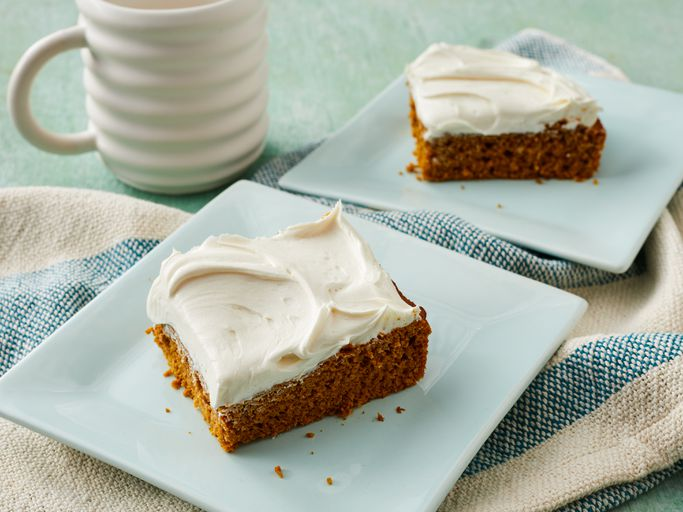

HOME
Pumpkin Cake

Description
This super easy pumpkin spice cake recipe is moist and delicious. Great when frosted with your favorite cream cheese frosting. Plan ahead, tastes best after chilling.
Ingredients
- Cooking Spray
- 1 (15.25 ounce) package spice cake mix
- 1 (15 ounce) can pumpkin
Steps
- Gather ingredients. Preheat the oven to 350 degrees F (175 degrees C).
- Generously grease a 9x13-inch baking pan with cooking spray.
- Mix spice cake mix and canned pumpkin together in a large bowl until well combined; spread evenly into the prepared pan.
- Bake in the preheated oven until a toothpick inserted in the center comes out clean, about 25 to 30 minutes.
- Cool and serve, or store in the refrigerator to serve the next day.